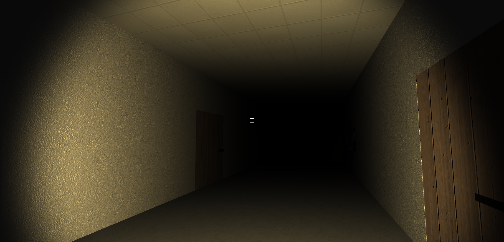
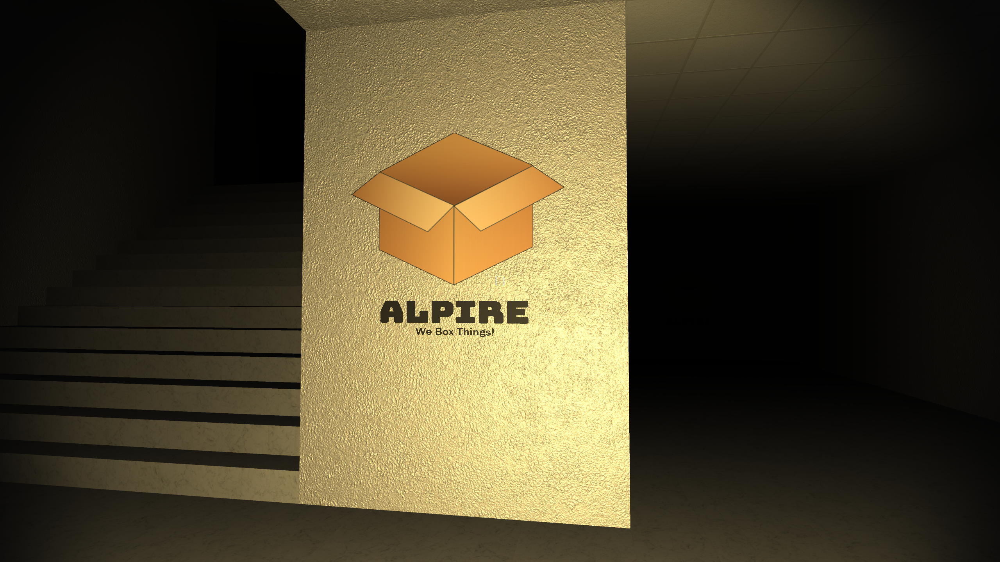

Strife
Strife is a 3d horror mystery game where you haven't the slightest idea of what is happening, other than you are in an abandonded company warehouse.
Strife was created during a one week game jam in the Fall of 2021. The theme was "reflection." Having seen the theme I realised that most people during this jam will create a game that has to do with mirror reflections, so I decided to use the other definition where the player "reflects" on what is happening around them. I wanted to make things interesting, so I took the idea of simple "boxes" to use as my base for a horror game. Through many replies and feedback from playtesters, I have been told that this game was both hilarious and creepy, which was exactly what I wanted in the end.
Engine: Unity
Software Used: Visual Studio, Github, Photoshop/Illustrator
Languages: C#
Timeframe: 1 week
Status: Complete
Download here!
Strife was created during a one week game jam in the Fall of 2021. The theme was "reflection." Having seen the theme I realised that most people during this jam will create a game that has to do with mirror reflections, so I decided to use the other definition where the player "reflects" on what is happening around them. I wanted to make things interesting, so I took the idea of simple "boxes" to use as my base for a horror game. Through many replies and feedback from playtesters, I have been told that this game was both hilarious and creepy, which was exactly what I wanted in the end.
Engine: Unity
Software Used: Visual Studio, Github, Photoshop/Illustrator
Languages: C#
Timeframe: 1 week
Status: Complete
Download here!
My Contributions
As I was the only contributor to this project, all the programming and level design was done by myself. This game is not very programming heavy; it relies mostly on the atmosphere and
exploration for the player to have. Other than player movement, camera movement, and a few smaller systems, the base of this creation was the level design.

This was my first time attempting to create cinematics in a game. I am proficient with Unity's timeline animator, however I have never made a video with it before until this game. I used Unity's cinemachine to work with the camera angles and used the timeline to affect certain objects at specific time periods. The goal was to immerse the player inside of the game. While this has nothing to do with cinematics, I also used the timeline to create the door animations.

Cinematics
This was my first time attempting to create cinematics in a game. I am proficient with Unity's timeline animator, however I have never made a video with it before until this game. I used Unity's cinemachine to work with the camera angles and used the timeline to affect certain objects at specific time periods. The goal was to immerse the player inside of the game. While this has nothing to do with cinematics, I also used the timeline to create the door animations.
Level Design
As stated previously, the level design and atmosphere of the game is what was most important to me. I wanted to create a dark, creepy, and eerie map that gave the player little information as to where they are. Similar to games such as Portal, Strife also has a background voice speaking to the player. While not important to the gameplay, it gives the player more of an idea of the story. There are no lights in the game, only the flashlight that the player obtains early in the game, as well as the television screen from the first room, giving the player more of a dark atmosphere.
Various Pictures
